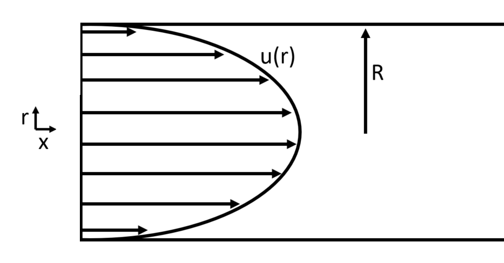

A bus rental company charges $100 plus $5 per rider. The maximum occupancy of the bus is 40 people.
Make a table with numbers of riders and cost to rent. (You don't need to include every number.)
Come up with an algebraic definition of the function describing the rental cost.
Sketch a graph of this function.
What are the domain and range of this function?
Definition - Function
Definition: A function is a rule for assigning to each member of a set, called the domain, one and only one member of another set, called the range.
Example 2 - class
In a previous class, Chris earned a B+, Elizabeth earned an A, and Michael earned a C.
Is this a function? video
Example 3 - sin(x)
Consider \(f(x)=\sin (x)\).
What are the domain and range?
We know \(\sin(0)=\sin(2\pi)=0\), but the definition of function states each member of the
domain is assigned to one and only one member of the range. What is going on here?
What does the graph look like? How is this related to ideas above?
Example 4 - SIR
Consider the corona virus currently (2020) occuring throughtout the world. (News story)
SIR models are a class of epidemic models that track susceptible (S), infected (I), and removed (R) populations as a disease works its way through a community.
These types of models are actually used in the real world (article).
There are many extensions of the model, but the basic model has just two parameters \(\alpha\) and \(\beta\). You can experiment with these parameters in the applet below.
Can you figure out what \(\alpha\) and \(\beta\) represent? Are there any functions here?
Let \(f(x) = x^2\). We will make a new function, \(H(x)\), defined by the distance from (0,0) to \((x,f(x))\).
What is the distance formula between two points (a,b) and (x,y)?
What is \(H(0)\) here? \(H(3)\)? \(H(-3)\)?
What do you notice about \(H(3)\) and \(H(-3)\)? Why is this happening?
Can you come up with a algebraic definition for \(H(x)\)?
What are the domain and range of \(H\)?
Graph \(H(x)\).
video
Example 6 - Blood flow in a vessel
Consider blood flow in a vessel. The flow is not the same different areas of the vessel lumen.

\(u(r) = k (R^2 - r^2) \), where \(u\) is horizontal velocity, \(R\) is the radius of the vessel, \(r\) is the radial coordinate, and \(k\) is a constant.
What can you say about the blood flow?
Definition - Polynomial
Definition: A polynomial in \(x\) is an expression that can written in form \(p(x) = a_0 + a_1 x + a_2 x^2 + ... + a_n x^n\),
where \(a_i\) are constants and powers of \(x\) are positive integers. The degree of \(p(x)\) is, \(n\), the largest power of \(x\).
Example 7
Consider \(f(x) = x^2\).
What does \(g(x) = f(x-1)\) look like?
Let \(h(x) = 3x^{1/4}\). What is \(h(f(x))\)?
video
Example 8
Let \(f(x) = -x^2 - 6x\).
Does the graph of \(f\) open up or down?
What is the vertex of this graph?
What is the equation for the axis of symmetry of the graph?
What are the \(x\) and \(y\) intercepts of the graph?
What is the domain and range of \(f\)?
Sketch the graph of \(f\).
video
Example 9
Let \(g(x) = 3x^2 - 24x - 5\).
Does \(g\) have a maximum or minimum?
Write \(g(x)\) in standard form for a parabola, i.e. \(g(x) = a(x-h)^2 + k\).